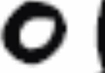

Zoom x2 :
Les bords de la tête sont moins nets dans la version bitmap, mais c'est très faible.
|
| |
Zoom x4 :
On commence à voir une vraie différence entre les deux images.
|
| |
Zoom x8 :
Les pixels commencent à vraiment être visibles dans la version bitmap.
|
| |
|
Zoom x16 :
|
|  |